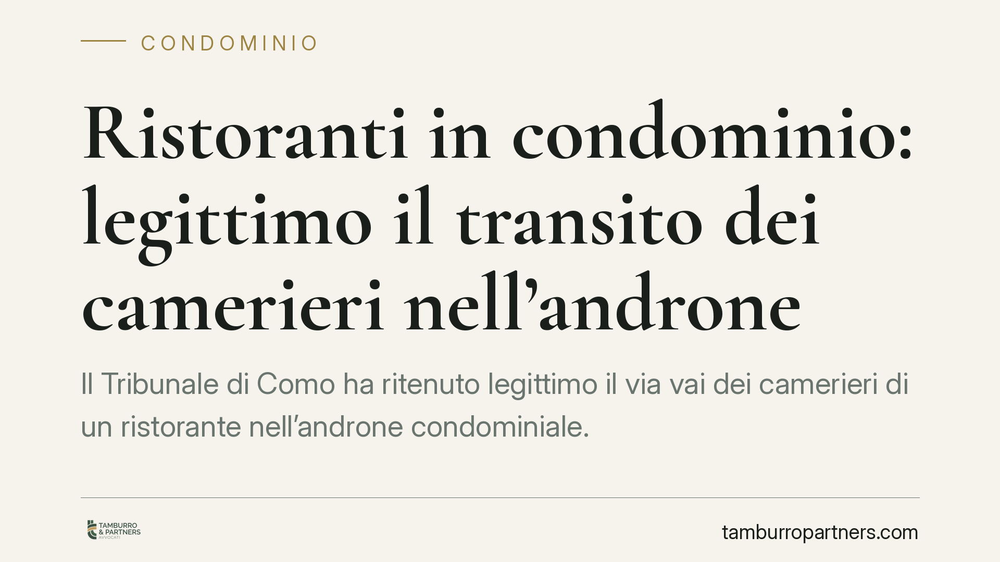

Ristoranti in condominio: legittimo il transito dei camerieri nell'androne
Il Tribunale di Como ha ritenuto legittimo il via vai dei camerieri di un ristorante nell'androne condominiale. Il passaggio, di per sé, non altera l'estetica dell'edificio né impedisce agli altri condòmini l'uso delle parti comuni. La decisione ridisegna i confini tra uso più intenso di un bene comune e vero e proprio abuso, tema ricorrente nei condomìni a destinazione mista.

Il caso
Un condominio contestava a un ristorante situato nell'edificio il continuo passaggio dei camerieri attraverso l'androne comune. Secondo i condòmini, quel transito costante avrebbe leso il decoro dello stabile e ostacolato il normale utilizzo dello spazio d'ingresso.
Il Tribunale di Como ha respinto la domanda. Il ragionamento è lineare: il semplice passaggio di personale non modifica la destinazione dell'androne, non ne compromette l'estetica e non priva gli altri condòmini della possibilità di servirsene. In assenza di un'alterazione concreta, non c'è comportamento illecito.
Inquadramento normativo
Il riferimento centrale è l'art. 1170 del Codice civile, che disciplina l'azione di manutenzione: lo strumento con cui il possessore di un bene reagisce a molestie che turbano il godimento pacifico del possesso. Perché l'azione abbia successo, la molestia deve essere concreta e attuale, non un semplice fastidio soggettivo.
Sul punto va richiamato anche l'art. 1102 c.c., che regola l'uso della cosa comune. Ogni condòmino - e chi ne fa le veci, come il conduttore di un locale - può servirsi delle parti comuni purché non ne alteri la destinazione e non impedisca agli altri di farne pari uso. La norma consente espressamente un uso *più intenso* del bene: ciò che conta è che tale intensità non si traduca in esclusione o compromissione degli altri aventi diritto.
Il transito dei camerieri rientra proprio in questa fascia: un utilizzo frequente, ma non appropriativo. L'androne resta accessibile a tutti; nessuno viene estromesso.
Perché la distinzione conta
La questione è più ampia del singolo androne. Nei condomìni con attività commerciali - ristoranti, studi, negozi - il conflitto tra esigenze produttive e quiete dei residenti è fisiologico. La linea di confine tracciata dal Tribunale è utile perché sposta l'attenzione dal *fastidio percepito* al *danno concreto*.
Non basta lamentare un via vai più intenso. Occorre dimostrare che quel passaggio produce un pregiudizio verificabile: un intralcio effettivo all'uso comune, un deterioramento del bene, un'alterazione del decoro architettonico dell'edificio.
Il decoro, in particolare, è concetto giuridico e non estetico-soggettivo. Richiede una modifica visibile e stabile dell'aspetto dello stabile, non il semplice transito di persone che poi se ne vanno.
Implicazioni pratiche
Per i condòmini che intendono contestare un uso commerciale delle parti comuni, la decisione alza l'asticella probatoria. Serve documentare fatti, non sensazioni.
Per i titolari di attività all'interno di un edificio, la pronuncia offre un margine di sicurezza operativa: l'uso funzionale dell'androne, se non esclusivo e non alterante, è tutelabile.
Resta ferma la possibilità che il regolamento condominiale contenga clausole più restrittive. Se il regolamento vieta espressamente determinate attività o usi delle parti comuni, la valutazione cambia e occorre verificare la validità e l'opponibilità di tali clausole al singolo condòmino o conduttore.
Cosa fare in concreto
- Verificate il regolamento condominiale: controllate se esistono clausole che limitano l'uso delle parti comuni o vietano specifiche destinazioni. Distinguete tra regolamento assembleare e contrattuale, perché il regime dei divieti è diverso.
- Documentate i fatti: se lamentate un abuso, raccogliete prove del pregiudizio concreto - foto, testimonianze, eventuali perizie sul decoro o sull'uso impedito.
- Valutate la reale portata della molestia: prima di agire ex art. 1170 c.c., accertate che il disturbo si traduca in un danno effettivo e non in un semplice disagio.
- Privilegiate la via assembleare: molte controversie sull'uso delle parti comuni si risolvono con delibere che regolamentano orari e modalità, evitando il contenzioso.
- Consigliamo un'analisi preventiva della situazione contrattuale e regolamentare prima di avviare qualsiasi iniziativa giudiziale, per evitare azioni infondate e i relativi costi.
Disclaimer
Contributo informativo a cura di Tamburro & Partners - Avv. Giuseppe Tamburro. Non costituisce parere legale.
Ogni condominio ha una storia a sé.
Se gestisci un'amministrazione e vuoi un confronto su una specifica questione condominiale, scrivi allo studio. Ti rispondiamo entro un giorno lavorativo.